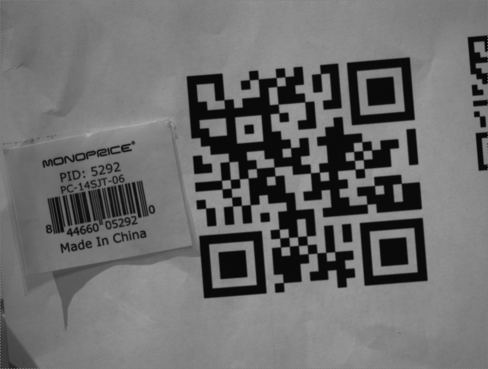

The ADPluginBar plugin depends on several external libraries. These include:
Further installation instructions are located in the README.md file in the top level of this repository.
The sample image used in all screens in this document captured with a prosilica camera
ADPluginBar (current version 1-1) has several requirements for proper functionality. It currently only accepts 8-bit mono images, though support
for other formats is planned in the future. Some conversion information is included in a file in the barSrc directory. Additionally, though inverted
bar codes are supported, they require a PV flag to be set, and thus cannot be read in conjunction with standard bar or QR codes. This is another feature
that is being considered for a future release.
Once ADPluginBar is installed, Some edits must be made to the common plugins screen linked to your detector. It should look as follows:
The Address that should be passed to each of the elements is Bar1. Thus, the entire PV would be, for example, "$(P)Bar1:PortName_RBV" for the portname field.
The "more" button should be linked to the provided "NDPluginBar.opi" screen, or an equivalent adl or edl screen. (Currently only CSS screens are provided, though
other types may be looked into in the future.) The NDPluginBar.opi screen looks as follows:

ADPluginBar supports reading up to 5 bar codes simultaneously, though currently only the first discovered barcode has its coordinates stored as a PV.
In order to access the remaining 4 barcodes, simply press the button titled: "View 1-5". Once pressed, the following screen will display:

As you can see, in the sample image used above, two barcodes are present, the QR code which was generated with a test message, and a two dimensional barcode taken form
a box from around the test area. Both codes were detected ane placed into PVs BarcodeMessage1_RBV, BarcodeType1_RBV and the '2' equivalents.
For more information on the newest release of ADPluginBar please check the RELEASE.md file in the top level directory. Additionally, please contact the
author with any questions regarding the usage of the plugin or feature requests.